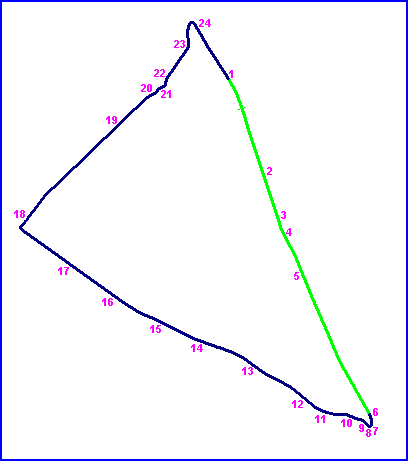
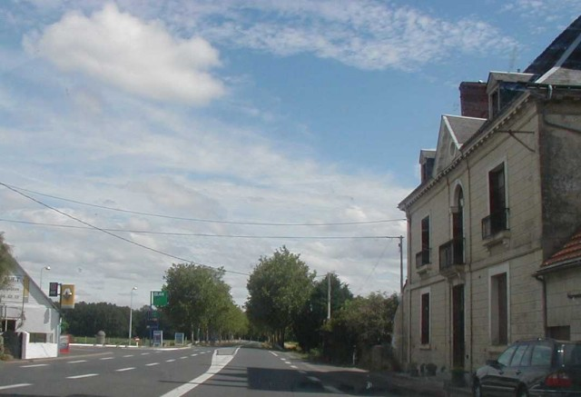
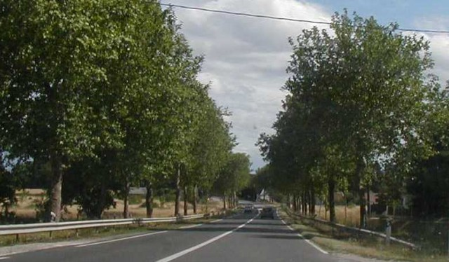
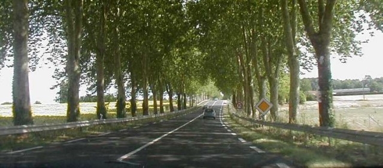
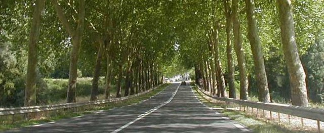
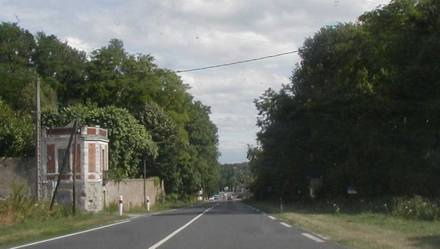

| Page 1 of 5 | Tours - RN158 (La Pailleterie to La Membrolle) |
|| Contents | RN158 | La Membrolle | RN159 | D48 | Semblançay || Home ||
Numbers on map indicate where the photos were taken. Click on
hyperlinks above.

Return to racingcircuits.net's Historic Circuits Photo Archive Main Index

01

02

03

04

05
Photographs ©Chris Hall. Reproduced here with kind permission.